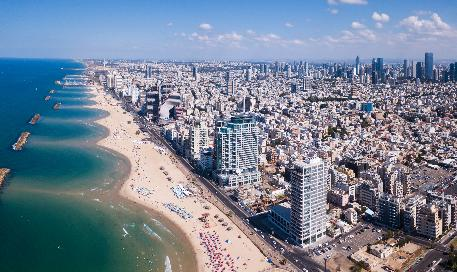
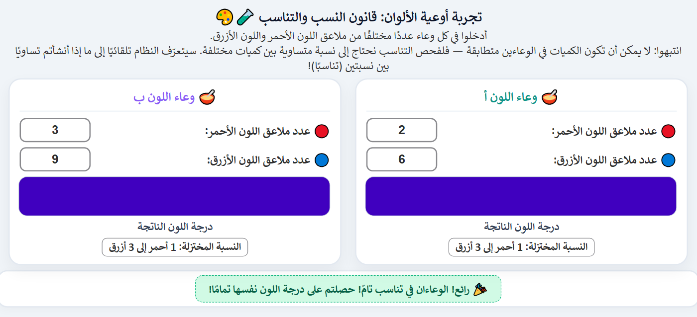
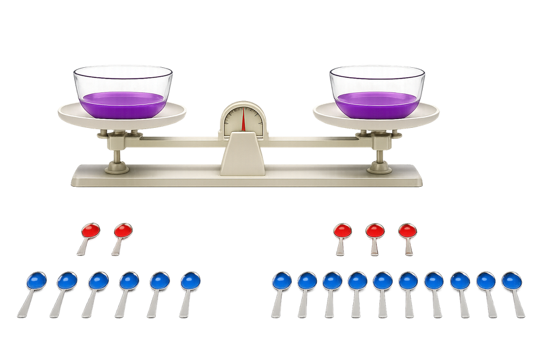

تعالوا نرى ماذا كان ينقصنا للإجابة عن السؤال:
الكثافة السكانية تُحسَب على النحو التالي: عدد السكان مساحة السكن
لكي نفهم أي مدينة أكثر اكتظاظًا، يجب أن نعرف أيضًا مساحتها.
فقد يكون فيها عدد كبير من السكان، لكن مساحة المدينة كبيرة جدًا ولذلك تكون أقل اكتظاظًا؟
فقط بعد أن نقارن النسبة بين عدد السكان ومساحة السكن في المدينتين، سنعرف أيهما أكثر اكتظاظًا.
أحيانًا لا يكفي أن نعرف أي معطى أكبر - بل يجب مقارنة النسب.
في تخصص الفنون في مدرسة "أجيال"، جرّب الطلاب إنشاء ألوان جديدة من خلال مزج اللون الأحمر والأزرق.
في التطبيق الذي أمامكم يمكن إضافة ملاعق من اللون إلى الوعاء ورؤية درجة اللون الناتجة.
خلطت خلود في وعائها ملعقتين من اللون الأحمر مع 6 ملاعق من اللون الأزرق.
وخلط عماد في وعائه 3 ملاعق من اللون الأحمر مع 9 ملاعق من اللون الأزرق.
غيّروا عدد الملاعق في كل وعاء في التطبيق بحيث يتطابق مع وعاءَيْ خلود وعماد.
هل درجة اللون في وعاء خلود أغمق، أفتح أم مطابقة لدرجة اللون في وعاء عماد؟

في الوعاء أ:
خلطنا ملعقتين من اللون الأحمر مع 6 ملاعق من اللون الأزرق.
في الوعاء ب:
خلطنا 3 ملاعق من اللون الأحمر مع 9 ملاعق من اللون الأزرق.
النتيجة المفاجِئة: حصلنا على درجة لون بنفسجي متطابقة تمامًا في الوعاءين!
لماذا يحدث ذلك؟ لأن النسبة بين المكونات في الوعاء أ تساوي النسبة بين المكونات في الوعاء ب.
هذه المساواة تسمى تناسبًا.
التناسب هو مساواة بين نسبتين.
هذا يعني أنه إذا وسّعنا أو اختزلنا إحدى النسبتين (أو كليهما) سنحصل على نفس النسبة.

في مثالنا:
إذا اختزلنا النسبة 2 : 6 بـ 2 سنحصل على النسبة 1 : 3.
إذا اختزلنا النسبة 3 : 9 بـ 3 سنحصل أيضًا على 1 : 3،
ولذلك يتحقق التناسب التالي: 26 = 39